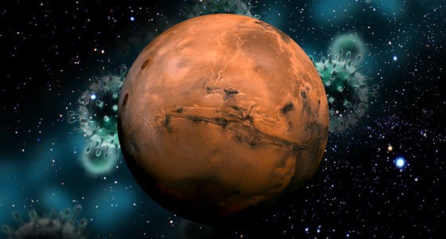

It’s still more of a scientific fantasy to imagine Homo-Sapiens colonizing the entire Milky Way, spread among the stars, and ruling the galaxy. However, it is a quite likely possibility that Humans will colonize mars and may even inhabit it as one of their own homes. However, isn’t it likely that the Humans on Mars would undergo drastic changes in their genome and eventually spring out as an entire species of its own?
Evolution may be described as a blind process that occurs naturally via external changes and an organism’s response to it. It is the change in the ‘Gene-expression’ of an organism occurring through mutation. The diversified climate over centuries has even caused genetic changes among us: The Sapiens. People living in the Himalayas have a genetically developed 30 percent better breathing capability than humans on flat land. This happened only within 3000 years when the current inhabitants migrated from china.
Compared to the Himalayas, Mars is a way more different and challenging place to inhabit. Therefore, to sustain life on Mars, evolution will take place in an extremely different fashion resulting in completely different organisms in the long run. The following factors may play the most crucial role in Martian evolution :
i. Gravity : Low Gravity (38% of Earth) on Mars is one of the most serious issues to deal with. Due to lower gravity on Mars, the bone density would likely decrease, just like the way it decreases at the Space station. However, this, in turn, would be helpful to increase the height of Individuals. The hearts of future Martians will also be affected. Due to lower Surface Gravity, their hearts would take a lesser amount of energy to pump blood all over the body. Therefore, it’s reasonable to infer that their hearts would be much less strong than humans on earth.
ii. Lack of oxygen in the atmosphere : Mars is currently a place that is desolate and filled with Carbon dioxide. To sustain life, the requirement of Oxygen will be inevitable. However, no matter how advanced our technologies get over the years, it is unlikely that it will duplicate Earth’s highly oxygen-enriched atmosphere. As a result, people on mars will gradually adapt and mutate to a stage where they will require little oxygen to survive (like the Himalayas). Over Years, we can expect Mars to contain people with breathing capabilities very few athletes on earth can ever hope to achieve.
iii. High Energy Cosmic and Gamma Radiation : Even with the best of our technologies, Mars won’t have an atmosphere as thick as the earth. As a result, there would be a higher rate of absorption of Gamma and Cosmic rays on the Martian atmosphere. This means that to refute the adversity caused by such, people on the surface would develop extremely dark skin with higher pigmentation. However, it is also true that Mars receives a lower amount of Vitamin-D which may cause people to be pale when they live deep underneath the surface.
iv. Sterility : As per our understanding, Mars is a place that has absolutely no microbes whatsoever. As a result, people there would gradually mutate and weed away the genes that are responsible to stir up antibodies to fight against those. This means that they would gradually lose a considerable amount of immunity. Soon, the microbe-filled world will become an extremely deadly place for the Martians. This will eventually cause extreme tensions on earth-mars transits.
Provided that we terraform Mars, a considerable genetic diversity will be an undeniable issue. Soon, due to consistent adaptation with a challenging atmosphere on mars, they will mutate so much that interbreeding between the 2 populations will become impossible. Homo Martiensis has officially arrived as the newest member of the genus Homo. Been a long time since we’ve lost 5 of our ancient ‘homo’ cousins, hasn’t it?